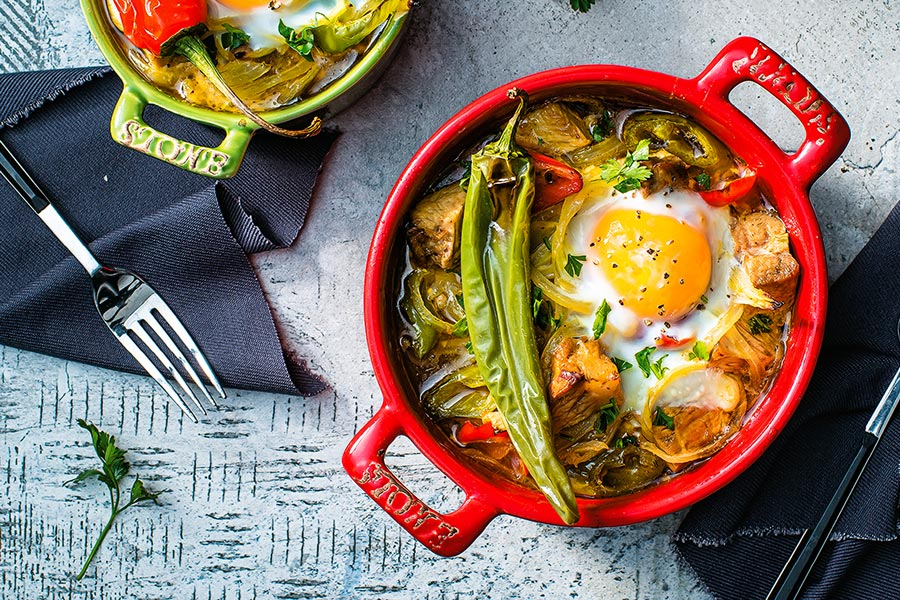

Kavarma Kebap

Description :
This is one of the most popular meals in Bulgaria which is not so famous outside the country. The ingredients and preparations depend on the region.
Almost every part of Bulgaria has its own Kavarma recipe. In general, the meal consists of marinated cooked meat and vegetables.
It could be mild or spicy depending on the region and the likings.
Goes perfectly well with beer or rakia.
Ingredients :
- 2 lbs pork meat, cut into cubes
- 1/2 cup oil
- 2 big leaks
- 1 tablespoon tomato sauce or puree
- 1 tablespoon paprika
- a pinch of crushed black pepper
- 1 cup red or white wine
- 1 onion, chopped
- 2 carrots
- 2 bay leaves
- a pinch of parsley
- 1 hot pepper
How to make it:
- Combine wine, tomato sauce, paprika and black pepper to make the marinade.
- Add the cut in discs carrots to the pork and cook in very hot oil until meat starts to brown.
- Take out and soak in the marinade for about 30 minutes. Use the same hot oil to cook the cut in discs leaks, add 1/2 cup water to it and cook while soft (about 5 minutes).
- Add meat and remaining marinade to the leaks, reduce the heat and simmer until most of the water is gone.
- Add the bay leaves, shopped onion, and the hot pepper and cook for about 5 more minutes. Sprinkle with parsley and serve. Goes well with French fries or white rice. Enjoy!